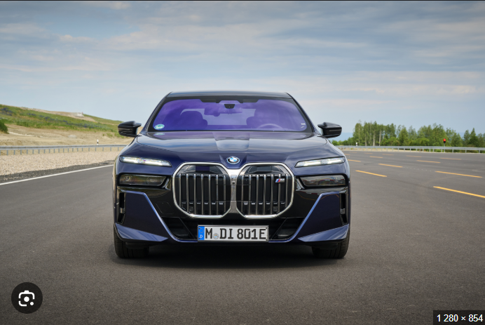
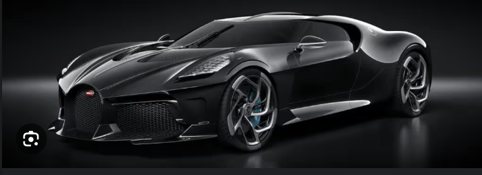
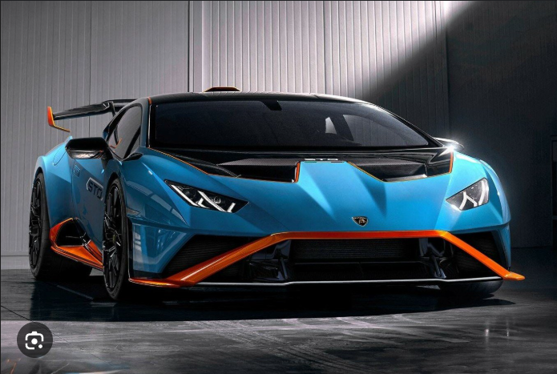
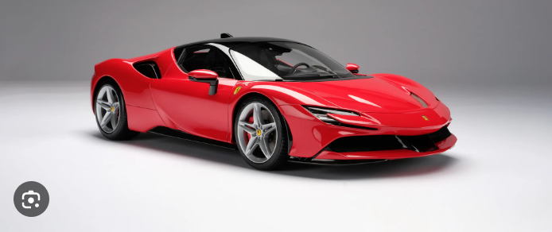
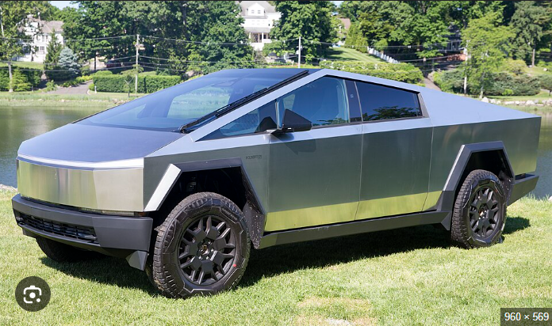

car info
bmw
Bayerische Motoren Werke Aktiengesellschaft,[3] trading as BMW Group (commonly abbreviated to BMW (German pronunciation: [ˌbeɛmve] ⓘ), sometimes anglicised as Bavarian Motor Works), is a German multinational conglomerate manufacturer of luxury vehicles and motorcycles headquartered in Munich, Bavaria, Germany. The company was founded in 1916 as a manufacturer of aircraft engines, which it produced from 1917 to 1918 and again from 1933 to 1945, creating engines for aircraft that were used in the Second World War.

bugatti
Automobiles Ettore Bugatti was a German then French manufacturer of high-performance automobiles. The company was founded in 1909 in the then-German city of Molsheim, Alsace, by the Italian-born industrial designer Ettore Bugatti. The cars were known for their design beauty and numerous race victories. Famous Bugatti automobiles include the Type 35 Grand Prix cars, the Type 41 "Royale", the Type 57 "Atlantic" and the Type 55 sports car.

lamborghini
Automobili Lamborghini S.p.A. (/ˌlæmbərii/ LAM-bər-GHEE-nee, Italian: [automɔbili lamborini]), usually referred to as Lamborghini or colloquially Lambo, is an Italian manufacturer of luxury sports cars and SUVs based in Sant'Agata Bolognese. The company is owned by the Volkswagen Group through its subsidiary Audi.

ferrari
Ferrari S.p.A. (/fərri/; Italian: [ferrari]) is an Italian luxury sports car manufacturer based in Maranello. Founded in 1939 by Enzo Ferrari (18981988), the company built its first car in 1940, adopted its current name in 1945, and began to produce its current line of road cars in 1947. Ferrari became a public company in 1960, and from 1963 to 2014 it was a subsidiary of Fiat S.p.A. It was spun off from Fiat's successor entity, Fiat Chrysler Automobiles, in 2016. The company currently offers a large model range which includes several supercars, grand tourers, and one SUV. Many early Ferraris, dating to the 1950s and 1960s, count among the most expensive cars ever sold at auction.

tesla
Tesla, Inc. (/tɛzlə/ TEZ-lə or /tɛslə/ ⓘ TESS-lə[a]) is an American multinational automotive and clean energy company. Headquartered in Austin, Texas, it designs, manufactures and sells battery electric vehicles (BEVs), stationary battery energy storage devices from home to grid-scale, solar panels and solar shingles, and related products and services.
